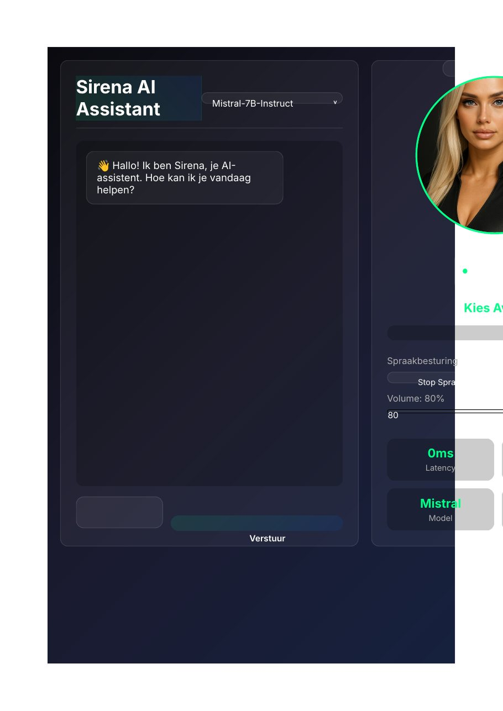

ASSISTENT · STIMME · AVATAR
Sirena
Ein sichtbarer flämischer Desktop-Assistent mit lokalem KI-Gehirn, Stimme und Avatar — der nicht nur antwortet, sondern echte Aktionen auf deinem Computer ausführt.
ERGEBNIS
Spricht, hört zu und führt echte Computeraktionen aus — mit lokalem KI-Gehirn, keine Cloud.

01 DAS PROBLEM
KI-Assistenten sitzen meist in einem Chatfenster und bleiben beim Reden. Sirena ist ein Experiment in die andere Richtung: ein Assistent, den du siehst und hörst, im Niederländisch von hier, und der Dinge auf deinem Computer tun kann.
02 WAS ES TUT
- Sichtbar und hörbar
- Ein Avatar auf deinem Desktop, mit Stimme auf Flämisch. Du sprichst mit ihr, sie spricht zurück.
- Lokales Gehirn
- Das Sprachmodell läuft auf deiner eigenen Maschine. Deine Gespräche und Dateien verlassen deinen Computer nicht.
- Echte Aktionen
- Anbindungen, um Dateien zu öffnen, Programme zu starten, Infos nachzuschlagen und Aufgaben auszuführen — mit Bestätigung, wo es sich gehört.
- Erweiterbar
- Neue Fähigkeiten als Module hinzufügen, damit Sirena mit deinen Bedürfnissen mitwächst.
03 WAS ICH DARAUS GELERNT HABE
Sprache und Avatar lassen einen Assistenten sofort ‚echter‘ wirken — und damit auch strenger beurteilt. Latenz, Zuverlässigkeit und klare Bestätigungen wiegen schwerer als noch ein Feature.
INTERESSE?
Lass uns reden.
Sag mir, was du davon hältst — oder was du damit machen würdest.